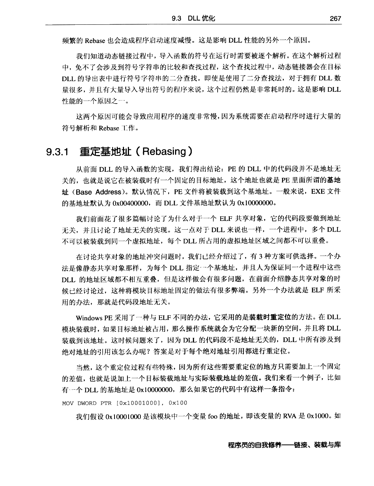
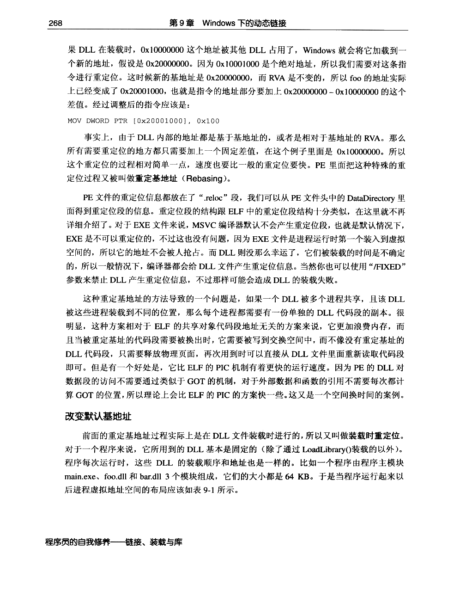
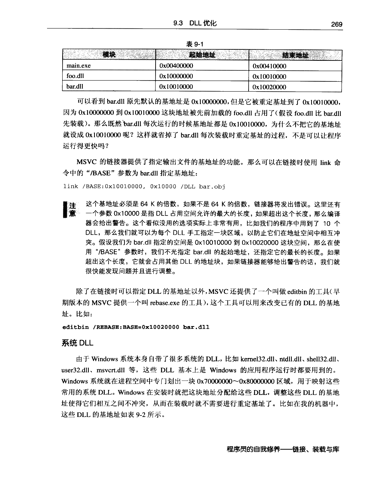
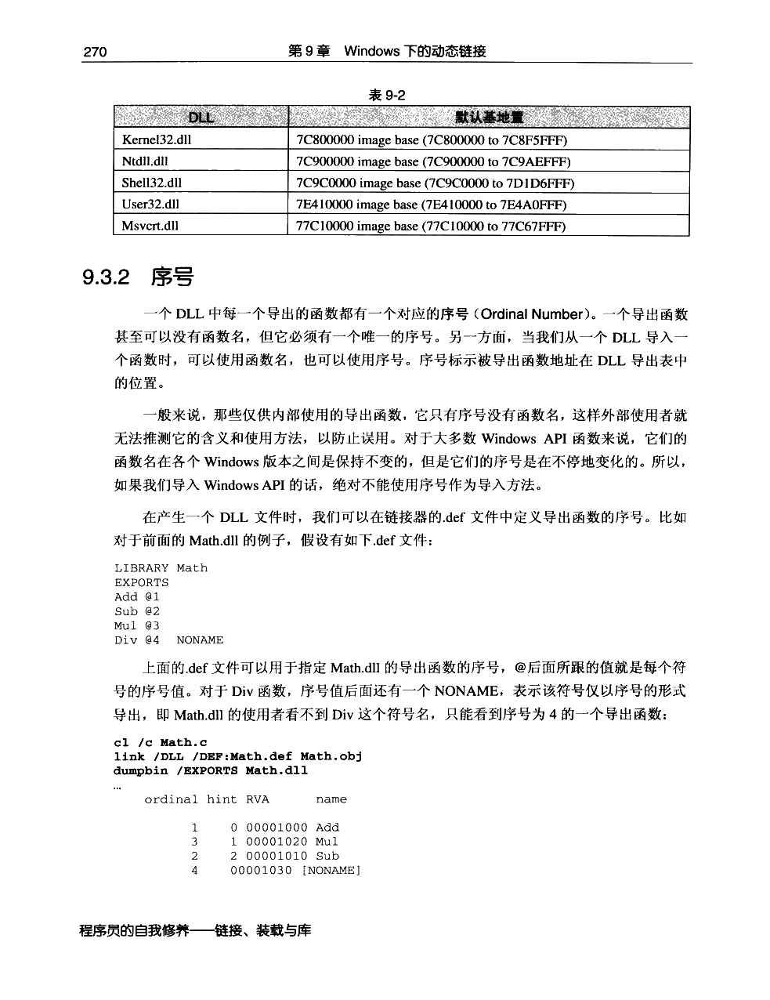
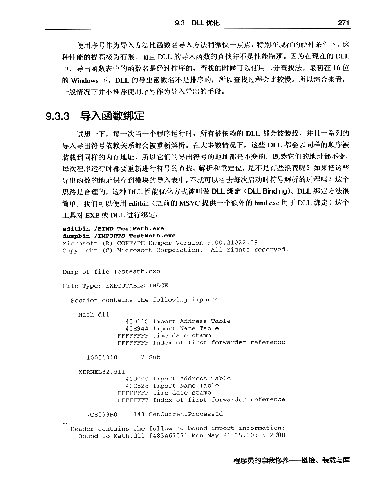
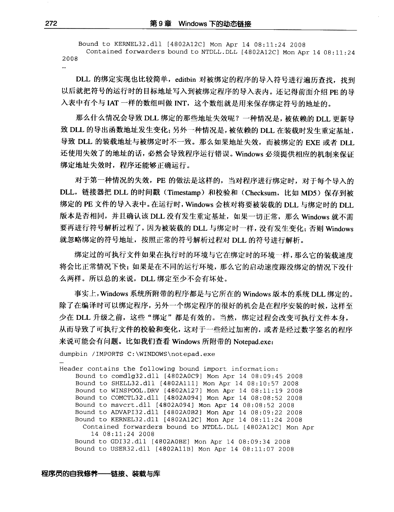

← 返回正文9.3 DLL 优化
PDF 第 289 页 · 书内第 266 页 PDF 第 290 页 · 书内第 267 页
PDF 第 290 页 · 书内第 267 页
PDF 第 291 页 · 书内第 268 页
PDF 第 292 页 · 书内第 269 页
PDF 第 293 页 · 书内第 270 页
PDF 第 294 页 · 书内第 271 页
PDF 第 295 页 · 书内第 272 页